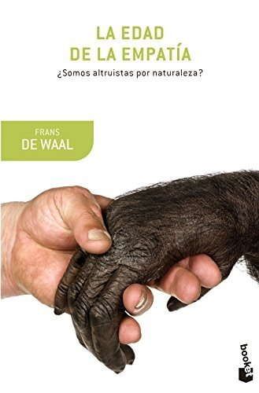
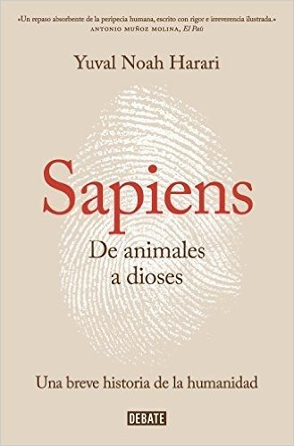
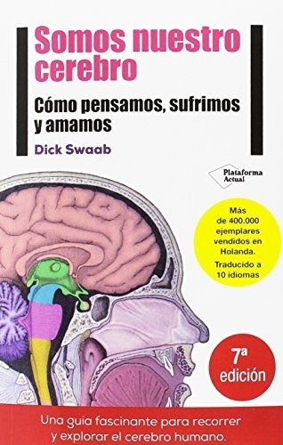
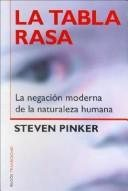
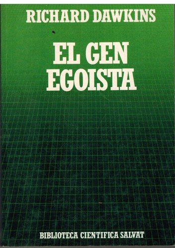

Libros de psicobiología y bases biológicas de la conducta
Libros de psicobiología y bases biológicas de la conducta en español: 6 libros completos para leer gratis aquí mismo y 11 fichas de títulos actuales.
Aspectos biológicos de la complejidad humanaAlfredo Martín Vilches, Teresa Inés Legarralde y otros
Aspectos biológicos de la complejidad humanaAlfredo Martín Vilches, Teresa Inés Legarralde y otrosLa base del iceberg. Fundamentación psicobiológica de los factores de riesgo del trastorno de conducta adictivaFontseca Moratalla, Sònia
La base del iceberg. Fundamentación psicobiológica de los factores de riesgo del trastorno de conducta adictivaFontseca Moratalla, SòniaNeuroanatomía y neurofisiología en psicologíaAugusto Leonardo Luisi y otros
Neuroanatomía y neurofisiología en psicologíaAugusto Leonardo Luisi y otrosPsicología GenéticaTerigi, Flavia
Psicología GenéticaTerigi, Flavia¿Error o fraude? : engaños y equivocaciones en la investigación psicobiológica infantilPollitt Burga, Ernesto
¿Error o fraude? : engaños y equivocaciones en la investigación psicobiológica infantilPollitt Burga, ErnestoDinámica familiar en adolescentes con trastornos de la conducta alimentaria: una revisión bibliográficaTrigo Ruiz, Alba; Jiménez García, Irene; Borrallo Riego, Álvaro; Guerra Martín, María Dolores
Dinámica familiar en adolescentes con trastornos de la conducta alimentaria: una revisión bibliográficaTrigo Ruiz, Alba; Jiménez García, Irene; Borrallo Riego, Álvaro; Guerra Martín, María DoloresNeurociencia del cuerpoNazareth Castellanos
Neurociencia del cuerpoNazareth CastellanosSiete lecciones y media sobre el cerebroLisa Feldman Barrett
Siete lecciones y media sobre el cerebroLisa Feldman BarrettCompórtateRobert M. Sapolsky
CompórtateRobert M. SapolskyEl mono que llevamos dentroFrans de Waal
El mono que llevamos dentroFrans de WaalLa edad de la empatíaFrans de Waal
La edad de la empatíaFrans de Waal
Sapiens. De animales a diosesYuval Noah Harari
Sapiens. De animales a diosesYuval Noah Harari
Somos nuestro cerebroDick Swaab
Somos nuestro cerebroDick Swaab
La tabla rasaSteven Pinker
La tabla rasaSteven Pinker
El gen egoístaRichard Dawkins
El gen egoístaRichard Dawkins
Cómo hacer que te pasen cosas buenasMarian Rojas Estapé
Cómo hacer que te pasen cosas buenasMarian Rojas EstapéPor qué dormimosMatthew Walker
Por qué dormimosMatthew WalkerTemas relacionados
¿Estás eligiendo carrera?
Haz gratis el test de orientación vocacional de AURZANE: intereses, aptitudes, autoconcepto y hábitos de estudio, con informe completo.